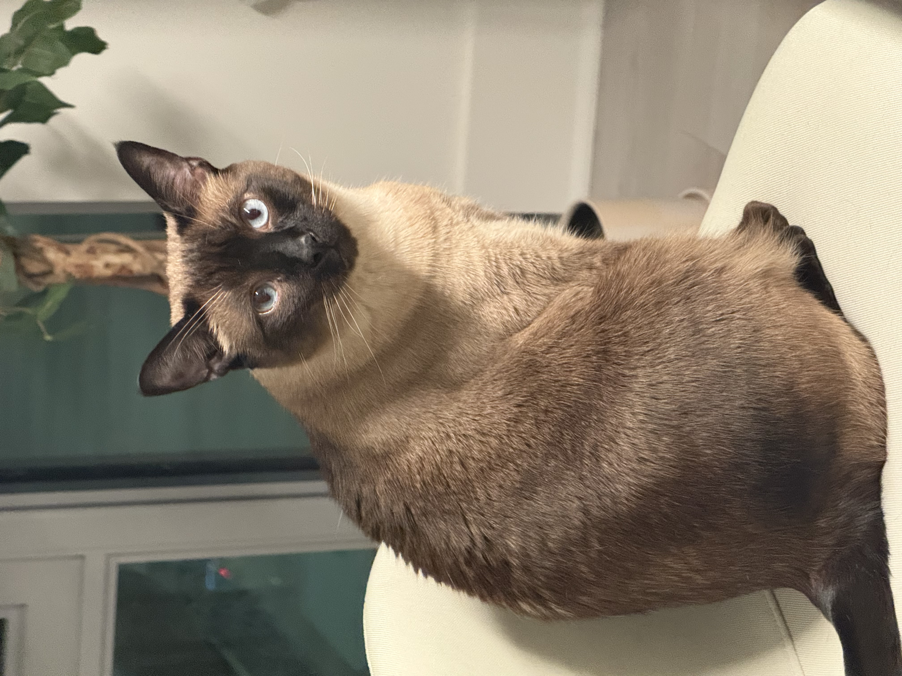

I am a Biostatistics PhD student in MD Anderson Cancer Center advised by Peng Wei since 2021.
I received a Master’s degree in Biostatistics from Yale University in New Haven, Connecticut. During the summer of 2024, I interned at Merck in Rahway, New Jersey.
Github |
Google Scholar |
Linkedin |
Email: zhichao.xu [AT] aya.yale.edu
News
- [2023/4]: This template is released on Github
- [2020/8]: I started my PhD at CMU!
Selected Publications
* indicates equal contribution

Observation-Centric SORT: Rethinking SORT for Robust Multi-Object Tracking
CVPR 2023 [arxiv] [code] [mmtracking]